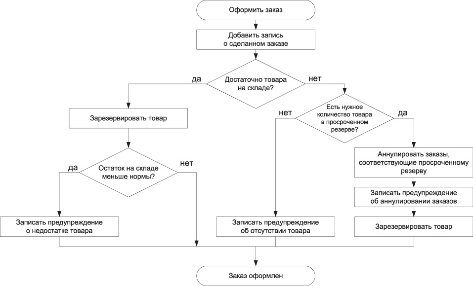
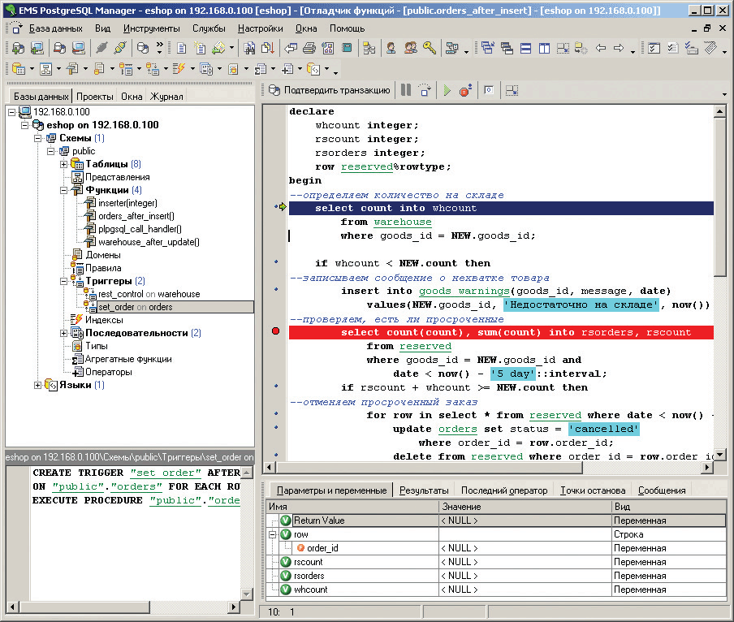

Данная статья не актуальна (2004 г.), но содержит несколько базовых принципов, которые не устарели со временем. Так же приведенная в статье информация показывает ретроспективу развития инструментария PostgreSQL.
* * *
Система управления базами данных PostgreSQL обладает очень мощными средствами, делающими возможным перенос части так называемой бизнес-логики приложения со стороны клиента (по отношению к СУБД) на сторону сервера. При этом сокращается, и порой существенно, трафик между клиентом и сервером, упрощается сопровождение разработанного приложения (сервер один, а клиентов может быть много), повышается надежность в плане целостности данных, в ряде случаев становится проще и сам алгоритм работы приложения.
Данная статья посвящена рассмотрению одного из наиболее эффективных средств – триггеров. Все примеры тестировались на PostgreSQL 7.4.2, работающей на системе FreeBSD 5.2.
Для примера разработаем функцию оформления заказа в простом интернет-магазине, отличительной особенностью которой будет максимально возможный перенос всей логики на сторону СУБД.
Итак, пользователь выбрал интересующий его товар и нажал ссылку «Купить». Далее необходимо:
Операции выставления счетов, получения оплаты и т. д. для простоты возложим на менеджеров компании. Методы их взаимодействия с базой данных рассматривать в данной статье не будем. Также не будем резервировать товар частично, если необходимого количества не оказалось – пусть этим тоже занимаются менеджеры. Для наглядности алгоритм того, как должно вести себя наше приложение, представлен на рис. 1.

Рисунок 1
Итак, попытаемся решить сформулированные выше задачи без помощи «внешнего» сценария, по одному-единственному запросу к СУБД.
Структура БД для нашей задачи будет следующая:
Поскольку предупреждения могут быть связаны как с заказом, так и с товаром, то для повышения наглядности воспользуемся такой возможностью PostgreSQL, как наследование таблиц. Родительская таблица warnings будет содержать все предупреждения, а дочерние order_warnings и goods_warnings – дополнять ее идентификаторами соответствующего заказа или товара.
Для решения указанных задач, как нетрудно догадаться, будем использовать триггеры. Напомню, что триггер – это связь хранимой процедуры с одной (или несколькими) из операций модификации, выполняемых над таблицей (UPDATE, INSERT, DELETE), автоматически запускающая эту процедуру (функцию) при получении соответствующего запроса. Нам понадобятся «базовый» триггер, выполняемый после операции добавления записи (INSERT) в таблицу orders – для решения задач 1-3, и триггер на операцию UPDATE таблицы warehouse для контроля обязательных остатков (задача 4). Функцию записи предупреждений каждый из этих триггеров будет выполнять в соответствии со своей «зоной ответственности».
Итак, создадим базу данных eshop, в которой и будем экспериментировать. В ней создаем структуру нашей БД:
create table orders(order_id serial, customer varchar, goods_id numeric(5), date date, count numeric(3), price numeric(7,2));
create table goods(goods_id serial, goods varchar, rest numeric(2));
create table warehouse(goods_id numeric(5), count numeric(5));
create table reserved(goods_id numeric(5), order_id numeric(5), count numeric(3), date date);
create table warnings(date date, message text);
create table order_warnings(order_id numeric(5)) inherits(warnings);
create table goods_warnings(goods_id numeric(5)) inherits(warnings);
Далее, нам нужно убедиться, что процедурный язык PL/pgSQL доступен в созданной базе. Для этого выполните следующую команду:
select * from pg_language;
Если plpgsql в полученном результате отсутствует, то из командной оболочки вашей ОС выполните следующую команду:
$ createlang –U pgsql plpgsql eshop
Опция –U задает пользователя – администратора БД, от имени которого будет выполняться данная операция.
Поддержка языка может быть включена и из программы-клиента (например, psql) выполнением следующих двух команд:
create function plpgsql_call_handler()
returns language_handler
as ‘$libdir/plpgsql’, ‘plpgsql_call_handler’
language ‘c’;
create trusted procedural language ‘plpgsql’
handler plpgsql_call_handler;
Первая из них создает функцию-обработчик на базе библиотечной функции, вторая – собственно язык PL/pgSQL на основе созданного выше обработчика.
Если вы считаете, что процедурный язык будет нужен вам во всех (или большинстве) базах данных, то таким же образом его можно добавить в БД template1. В результате этого поддержка PL/pgSQL будет автоматически добавляться во все создаваемые впоследствии базы (при создании новой базы по умолчанию в нее переносятся все объекты из БД template1, хотя шаблон может быть задан и явно, указанием параметра TEMPLATE в команде CREATE DATABASE).
Сначала немного теории. Триггер связывает функцию с операцией модификации таблицы. Следовательно, чтобы было что связывать, мы должны создать триггерную функцию. Синтаксис функции на языке PL/pgSQL следующий:
create [or replace] function <имя функции>(<аргументы>)
returns <тип возврата> as ‘<тело функции>’
language ‘plpgsql’;
Есть и другие опции. С ними можно ознакомиться в документации, а сейчас они нам не интересны. Необязательная фраза «or replace» позволяет перезапись функции при попытке создать другую с таким же именем (например, записать исправленный вариант). Без этого ключевого слова будет сгенерирована ошибка и потребуется сначала удалить существующую функцию и лишь затем записать на ее место новую.
Скобки после имени функции обязательны, даже если функция не имеет аргументов. Слово «returns» задает тип возвращаемых функцией данных. Указание языка также обязательно. В нашем случае это «plpgsql».
Тело функции имеет следующую структуру:
DECLARE
необязательный раздел определений
BEGIN
Операторы функции
END;
Последним оператором функции должен быть оператор «return», возвращающий данные указанного выше типа, даже если выход из функции осуществляется раньше (например, в блоке проверки условия) и эта команда никогда не получит управление.
Как и любой нормальный язык программирования, PL/pgSQL позволяет оперировать переменными. Все переменные (за одним исключением, о котором будет упомянуто ниже) должны быть описаны в разделе DELCARE, т.е. их необходимо перечислить с указанием типа данных. В этом же разделе допускается и инициализация переменной начальным значением с помощью ключевого слова DEFAULT. Общий синтаксис описания следующий:
<переменная> <тип> [ DEFAULT <значение>];
Вместо слова «DEFAULT» допускается использование оператора присваивания «:=», но, на мой взгляд, такая запись выглядит несколько коряво. Точка с запятой в конце каждого описания обязательна. Переменная может быть любого типа, который поддерживается в PostgreSQL. Кроме того, существуют три специальных типа данных: RECORD, table%RECTYPE и table.field%TYPE. Первый описывает запись любой таблицы, второй – запись указанной таблицы table, третий создает переменную такого же типа, как и тип указанного поля field таблицы table. Примеры использования этих типов данных будут приведены ниже.
В основной секции, заключенной в операторные скобки BEGIN-END, могут использоваться операторы присваивания, математические операторы, ветвления, циклы, вызовы других функций. Кроме того, тело функции может содержать вложенные блоки, имеющие ту же структуру (т.е. DECLARE-BEGIN-END). Видимость переменных распространяется на блок, в котором она описана, и на все вложенные блоки. Ниже конспективно перечислены основные операторы языка PL/pgSQL, которые понадобятся нам в дальнейшем:
If <условие> then
<операторы;…>
[else
<операторы;…>]
end if;
For in .. loop
<тело цикла>
End loop;
Существует вариант этого цикла и для «прохода» по результату выборки:
For <row-var> in <select> loop
<тело цикла>
End loop;
В этом случае в переменную <row-var> последовательно подставляются строки из выборки, и тип этой переменной должен быть либо <table>%rowtype, отражающий запись конкретной таблицы <table>, либо RECORD, описывающий обобщенную запись таблицы.
С остальными операторами, а также со встроенными функциями можно познакомиться в документации к языку PL/pgSQL.
В качестве примера создадим обычную (не триггерную) функцию, которая занесет в таблицу test1 (позже мы ее удалим) N случайных чисел. Сейчас польза от этого исключительно в виде примера, а в принципе таким образом можно, например, заполнять базу для выполнения тестов.
CREATE OR REPLACE FUNCTION inserter(int4)
RETURNS int4 AS
'DECLARE
N alias for $1;
Rand numeric default 0.5;
tmp varchar;
BEGIN
select tablename into tmp
from pg_tables
where tablename = \'test1\';
if tmp is null then
raise exception \'Table test1 not found.\';
else
delete from test1;
end if;
for i in 1..N loop
Rand := random();
insert into test1 values(Rand);
end loop;
return 0;
END;'
LANGUAGE 'plpgsql’;
Этот несложный пример демонстрирует большое количество особенностей работы функций. Пройдемся по ним по порядку.
Конструкция «alias for $N» в секции описаний позволяет связать описываемую переменную с другой, описанной ранее. В данном случае мы устанавливаем связь со стандартными переменными-параметрами. Так, $1 соответствует первому параметру, $2 – второму и т. д. Для удобства работы передаваемый в функцию параметр мы связываем с переменной N.
При описании переменной Rand показано, как инициализировать переменную значением на стадии описания, хотя в данном случае это и не нужно.
Конструкция «select <список полей> into <список переменных> …» позволяет сохранять результат выборки в переменных для дальнейшего использования. Количество переменных должно соответствовать количеству выбираемых полей. В данном случае мы проверяем, есть ли в нашей БД нужная нам таблица test1. Если она существует, то в служебной таблице pg_tables для нее будет запись. В противном случае переменная tmp получит псевдозначение NULL.
Также обратите внимание на необходимость экранирования всех кавычек, встречающихся в теле функции, поскольку оно уже заключено в кавычки как параметр команды create function (в дальнейшем, приводя листинги функций, я для простоты чтения символы экранирования буду опускать).
Далее проверяем, содержит ли переменная tmp какое-нибудь значение, и если нет – генерируем исключение (команда «raise exception»), по которому наша функция аварийно завершится.
Если же таблица test1 существует, то очищаем ее от старых значений (если таковые имеются) и приступаем к заполнению ее случайными числами, для генерации которых используется внутренняя функция random(), возвращающая случайное число в диапазоне 0..1.
Выполнить функцию можно с помощью такого запроса:
select inserter(5);
Запустите ее и убедитесь, что выполнение функции завершилось ошибкой «Table test1 not found.». Далее создаем нужную таблицу и повторяем выполнение функции:
create table test1 (rnd numeric);
select inserter(5);
select * from test1;
Как видите, на этот раз все 5 записей послушно добавились. Причем добавить 500 000 записей будет столь же просто. А теперь попробуйте посчитать трафик и число обращений к серверу баз данных, если эту задачу решать с помощью внешнего сценария на Perl, который будет выполняться на другой машине… Пользуясь случаем, давайте заодно оценим скорость выполнения операций вставки и удаления (машина Cel466/64 Мб с полным «джентльменским набором» – Apache, Squid, Sendmail; load average ~0.1):
|
№ |
Команда |
Время выполнения, ms |
|
1 |
select inserter(5) |
281 |
|
2 |
select inserter(500000) |
166906 |
|
3 |
select inserter(5) |
25797 |
|
4 |
select inserter(5) |
6610 |
|
5 |
select inserter(5) |
4485 |
|
6 |
vacuum full analyze |
14188 |
|
7 |
select inserter(5) |
47 |
|
8 |
select inserter(5) |
31 |
Третья команда помимо добавления пяти записей включала в себя удаление пятисот тысяч. Высокое время выполнения 4-й и 5-й команд объясняются значительной степенью фрагментации БД после удаления, хотя видна тенденция улучшать результат с каждым разом (оптимизатор-то не дремлет). Ну и «полный вакуум» с опцией анализа в комментариях не нуждается («лучше день потерять, зато потом за пять минут долететь»).
Нужно указать еще одну особенность: PostgreSQL выполняет кэширование функций, и при этом использует не имена таблиц, а их OID (Object Identifier). В результате, если теперь удалить таблицу test1, а потом создать ее повторно, то попытка выполнить функцию inserter завершится неудачей:
ERROR: связь с OID 29481 не существует
CONTEXT: PL/pgSQL function "inserter" line 10 at SQL statement
Чтобы восстановить работоспособность функции, ее придется пересоздать, повторно выполнив команду «create or replace function…».
Теперь несколько слов о триггерных функциях. От обычных они отличаются тем, что тип возврата у них должен быть обязательно trigger:
create [or replace] function <имя функции>(<аргументы>)
returns trigger as ‘<тело функции>’
language ‘plpgsql’
Соответственно команды return, встречающиеся в теле функции, должны возвращать данные именно этого типа, который, по сути, является типом RECORD, то есть возвращает запись таблицы. Как правило, в качестве параметра возврата выступают специальные переменные NEW (новое значение модифицируемой записи) и OLD (старое значение), которые передаются в триггерную функцию автоматически.
Вот мы и подошли к решению задачи, поставленной в начале статьи. Нужные таблицы уже созданы. Заполним их некоторыми значениями:
insert into goods(goods, rest) values(‘Клавиатура’, 15);
insert into goods(goods, rest) values(‘Мышь’, 25);
insert into goods(goods, rest) values(‘Монитор’, 5);
insert into warehouse(goods_id, count) values(1, 30);
insert into warehouse(goods_id, count) values(2, 30);
insert into warehouse(goods_id, count) values(3, 7);
Далее создаем триггерную функцию, которая будет выполняться после вставки новой записи в таблицу orders (здесь приведено только тело функции):
DECLARE
whcount warehouse.count%type;
rscount integer;
rsorders integer;
row reserved%rowtype;
BEGIN
--определяем количество на складе
select count into whcount
from warehouse
where goods_id = NEW.goods_id;
if whcount < NEW.count then
--записываем сообщение о нехватке товара
insert into goods_warnings(goods_id, message, date)
values(NEW.goods_id,
'Недостаточно на складе', now());
--проверяем, есть ли просроченные
select count(count), sum(count) into rsorders, rscount
from reserved
where goods_id = NEW.goods_id and
date < now() - '5 day'::interval;
if rscount + whcount >= NEW.count then
--отменяем просроченный заказ
for row in select * from reserved where
date < now() - '5 days'::interval loop
update orders set status = 'cancelled'
where order_id = row.order_id;
delete from reserved
where order_id = row.order_id;
insert into orders_warnings(order_id,
message, date)
values(row.order_id,
'Заказ отменен', now());
end loop;
--делаем новую запись в таблицу резерва
insert into reserved(order_id, goods_id, count, date)
values(NEW.order_id, NEW.goods_id,
NEW.count, NEW.date);
--заносим, если что-то осталось, на склад
update warehouse set count =
count + rscount - NEW.count
where goods_id = NEW.goods_id;
else
--зарезервировать не удалось – заносим соответствующие пометки
update orders set status = 'not reserved'
where order_id = NEW.order_id;
insert into orders_warnings(order_id,
message, date)
values(NEW.order_id,
'Товар по заказу не зарезервирован', now());
end if;
else
--уменьшаем количество на складе
update warehouse set count = count - NEW.count
where goods_id = NEW.goods_id;
--делаем запись в таблице резерва
insert into reserved(order_id, goods_id, count, date)
values(NEW.order_id, NEW.goods_id, NEW.count
NEW.date);
end if;
return NEW;
END;
Обратите внимание на применение нами переменной reserved%rowtype – она описывает запись таблицы reserved, которую мы в дальнейшем используем для организации цикла (конструкция «for row in select ... loop») по записям, выбранным из этой таблицы. С тем же успехом можно было бы использовать переменную типа RECORD, однако из-за меньшей скорости обработки этот тип рекомендуется задействовать только там, где переменная будет применяться при обработке нескольких таблиц или невозможно указать конкретную таблицу.
Аналогично переменная whcount описана с тем же типом, что и поле count таблицы warehouse. Конкретно в данном примере это сделано исключительно в целях демонстрации такой возможности. Но в реальных проектах типы некоторых полей в базе могут меняться по тем или иным соображениям (например, поле типа char, хранящее IP-адреса машин, может быть в будущем изменено на специальный тип inet), и использование привязки типа переменных к типу поля позволит избежать внесения правок во все разработанные функции.
И теперь создадим сам триггер, связывающий созданную выше функцию с операцией вставки новой записи в таблицу orders:
create trigger set_order after insert on orders
execute procedure orders_after_insert();
Точно так же поступим с триггером для контроля обязательных остатков (здесь все заметно проще):
create or replace function warehouse_after_update()
returns trigger as
'BEGIN
if NEW.count < (select rest from goods
where goods_id = NEW.goods_id) then
insert into goods_warnings(goods_id, message, date)
values(NEW.goods_id,
\'Остаток меньше обязательного\',
now());
end if;
return NEW;
END;'
language 'plpgsql';
create trigger rest_control after update on warehouse
execute procedure warehouse_after_update();
На что здесь можно обратить внимание, так это на непосредственное использование результата выборки в качестве переменной (см. конструкцию «select» в скобках). Естественно, выборка должна возвращать одно значение требуемого типа. Ну и поскольку благодаря этому в функции удалось обойтись без переменных, секцию DECLARE за ненадобностью можно опустить.
И теперь приступаем к проверке работоспособности. Сначала оформим «штатный» заказ:
insert into orders(customer, goods_id, count, price, date)
values('Иванов Иван Иванович', 3, 1, 7302.00, '2004-07-15');
Убеждаемся, что на складе количество мониторов уменьшилось, записи в таблицах заказов и резерва появились, предупреждений нет. Теперь закажем сразу 4 монитора:
insert into orders(customer, goods_id, count, price, date)
values('Горэлектросети', 3, 4, 7302.00, '2004-07-16');
Чтобы проверить правильность отмены просроченных заказов, даты выше были указаны прошедшие. Если сейчас заказать 10 мониторов, то заказ будет помечен как «not reserved», и соответствующая запись появится в таблице предупреждений. Поскольку даже с учетом просроченных заказов 10 мониторов никак не набирается, то и аннулироваться ничего не будет. А вот если заказать 3 монитора, то с учетом высвобождения просроченного резерва (5 штук) нужное количество набирается и даже 2 монитора будут возвращены на склад. В таблице предупреждений появится 4 записи – две об аннулировании просроченных заказов, одна о том, что имела место нехватка товара на складе, и одна о том, что остаток мониторов (4 шт.) меньше обязательного минимума (5 шт.).
Итак, поставленная в начале статьи задача решена: оформление заказа, включая такой «интеллектуальный» элемент, как попытка высвободить нужный товар из просроченного резерва, выполняется по единственному запросу к СУБД. Очевидно, что если в функцию придется внести изменения (например, будет принято решение, что резерв должен храниться минимум 7 дней, а не 5), то они потребуются только на стороне СУБД. Клиенты (сколько бы их ни было) будут работать без каких-либо изменений. Кроме того, если одна из операций даст сбой (например, не удастся сделать запись в таблицу резерва), то произойдет «откат» всех остальных операций, выполненных при отработке функции, поскольку функция исполняется как единый транзакционный блок.
Несколько слов о среде разработки. Конечно, никто не запрещает использовать для этого терминал psql, но малейшее изменение в функции потребует полностью набрать всю команду create function. Графический клиент PgAdmin существенно упрощает работу с функциями, однако некоторые недоработки интерфейса (невозможность сохранить изменения, не закрыв при этом окно редактора функции; отсутствие запоминания последнего размера окна – отрегулировав окно редактора один раз, при следующем его открытии придется делать все заново) способны сильно потрепать нервы. Поэтому лучше запастись более «продвинутым» приложением, например, средой разработки EMS PostgreSQL Manager (http://www.ems-hitech.com/index.phtml). Данная программа (рис. 2) предоставляет очень широкие возможности по разработке и отладке функций PostgreSQL, однако, как это ни печально, стоит денег. 30-дневную пробную версию можно загрузить с сайта разработчика.

Рисунок 2
На этом я думаю завершить серию обзорных статей по PostgreSQL. В дальнейшем, безусловно, вопросы работы с этой СУБД будут рассматриваться довольно часто, но уже в плане конкретных задач. На мой взгляд, разработчикам PostgreSQL удается очень удачно сочетать динамичное развитие продукта с определенной долей осторожности и консерватизма, что, в конечном итоге, делает эту СУБД весьма удачным выбором.